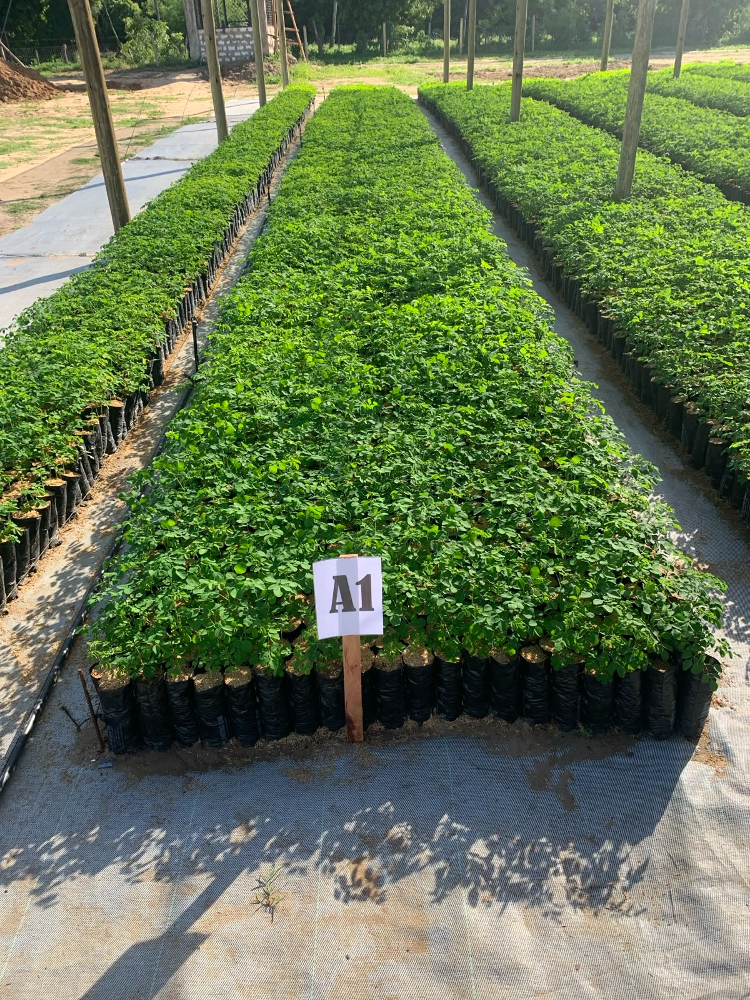
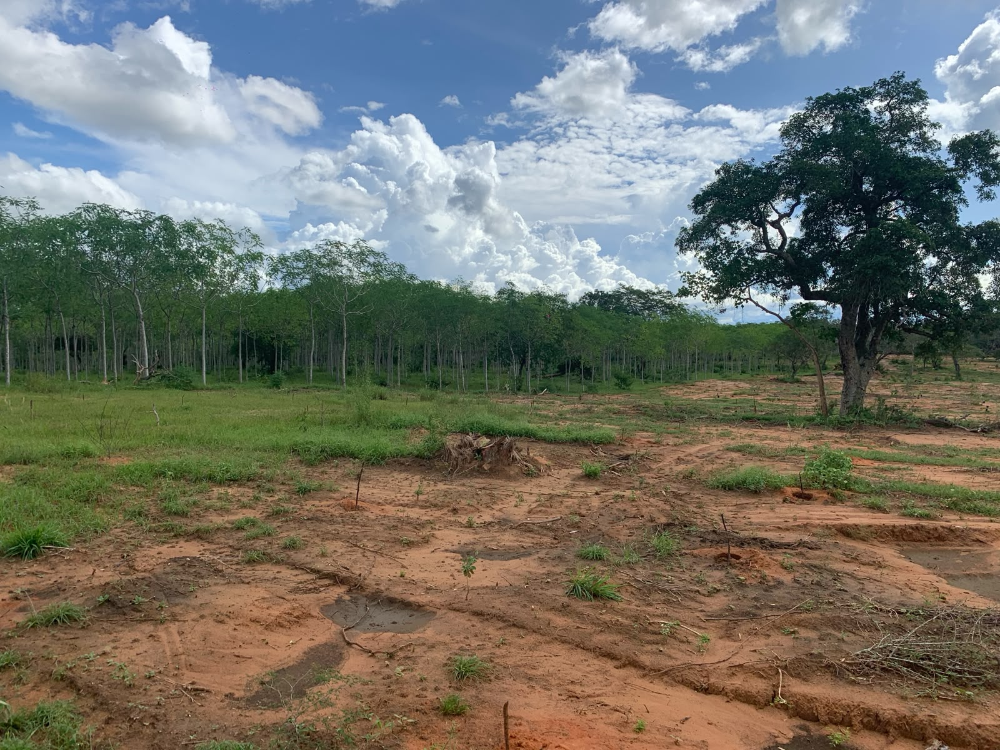
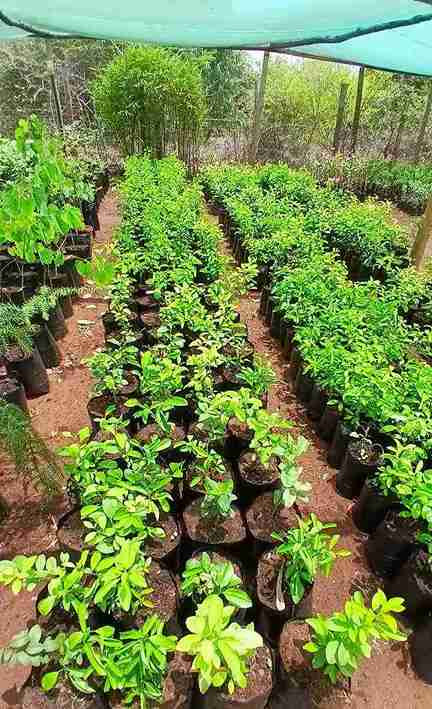

From large-scale nursery development to landscape restoration and climate-smart agriculture, our projects create lasting environmental and economic impact across Kenya.
Nursery Shadehouse
Landscape Restoration
Tree Species Propagated
Seedlings Capacity

Located at Mtwapa Agricultural Training Centre, this flagship facility combines commercial seedling production, applied research, training, and technology development.
Designed with a 7,500m² shadehouse, the nursery will produce millions of high-quality seedlings annually for restoration, agroforestry, and commercial plantation projects.
Current production includes species such as cashew and moringa, while ongoing research is focused on improved planting material, advanced substrates, biochar applications, compost, biological soil amendments and climate-resilient production techniques. The facility also serves as a platform for collaborative research with national and international partners, including investigations into dwarf cashew varieties, elite moringa selections and annatto production systems.
Beyond propagation, the Mtwapa site is envisioned as an innovation hub where
sustainable seedling production, tree planting and -maintenance, crop processing
technologies and drought resistant crops are tested and demonstrated before being
scaled to farmers and landscape restoration projects.
Collaboration with KALRO
Mtwapa is expected to start this year. By combining scientific research with
commercial operations, Crescendo Green aims to strengthen agricultural
productivity, increase carbon sequestration and build resilient value chains that
create lasting economic and environmental benefits.
The Koromi Project near Baricho serves as Crescendo Green's flagship demonstration site for integrated landscape restoration, commercial forestry, and regenerative agriculture.
Through partnerships with local and international organizations, the site demonstrates how productive landscapes can support both economic development and ecosystem recovery.
Spanning 200 hectares in Kilifi County near Baricho, the Koromi Project is Crescendo Green’s premier demonstration site for climate-smart land management and landscape restoration in Kenya’s drylands. Developed in partnership with our sister company, Capital Africa Agribusiness Ventures, it showcases the successful integration of commercial forestry, regenerative agriculture, and ecosystem restoration within one landscape.
The project collaborates with several key partners including JICA, KFS, KEFRI (under the SFS-CORECC project), Keystone Forestry Partners (Netherlands), Nature Kenya, and Ecosystem Restoration Communities (ERC).
The site features extensive plantings of indigenous and climate-resilient tree species, with a strong focus on Melia volkensii trials involving improved varieties, varying planting densities, and different soil amendment approaches. It also includes agroforestry systems, rainwater harvesting, swales for soil restoration, and other water management techniques. Operating as a living laboratory, Koromi tests innovative solutions in dryland forestry, carbon sequestration, and biodiversity enhancement under low-rainfall conditions (600–700 mm per year).
Knowledge gained from Koromi serves as the foundation for larger-scale initiatives that combine commercial production, conservation, and community development. By integrating sustainable timber production, agroforestry, land restoration, and nature-based solutions, the project reflects Crescendo Green’s vision of creating productive landscapes that deliver economic returns while building ecosystem resilience and climate adaptation.


Arabuko Farm (4 hectares), located in Kakuyuni near the Arabuko-Sokoke ecosystem in Kilifi County, was the original innovation hub of Crescendo Green and remains an important demonstration site for sustainable propagation, water-efficient farming systems, climate-smart agriculture and the cultivation of indigenous and commercial tree species (over 10 different fruit tree species) adapted to Kenya's coastal conditions.
Over the years, the nursery produced a wide range of forestry and agroforestry seedlings (> 60 different tree species propagated), including drought-tolerant hardwoods and multipurpose species, while supporting demonstration plantings and practical research on nursery management and field establishment. The site also hosted pilot initiatives in integrated farming, water management and circular production systems, providing valuable experience that has informed the design of Crescendo Green's larger operations.
Although the company's primary nursery activities have since expanded to the Mtwapa Agricultural Training Centre and its flagship dryland forestry programme at Koromi, Arabuko Farm remains an important milestone in the organization's development. The lessons learned there continue to underpin Crescendo Green's commitment to combining scientific innovation with practical implementation, contributing to resilient landscapes, stronger value chains and nature-based solutions across Kenya. Arabuko Farm sells indigenous tree seedlings and grafted fruit tree seedlings and young plants (retail and B2B).
We collaborate with governments, NGOs, researchers, investors, and private sector partners to scale landscape restoration and climate-smart agricultural solutions.
Get In Touch